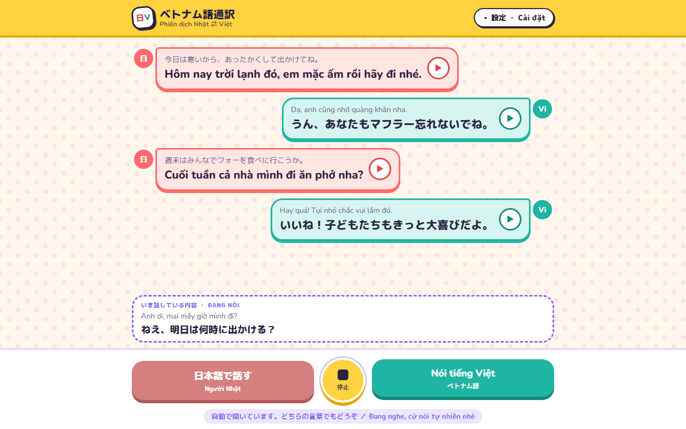
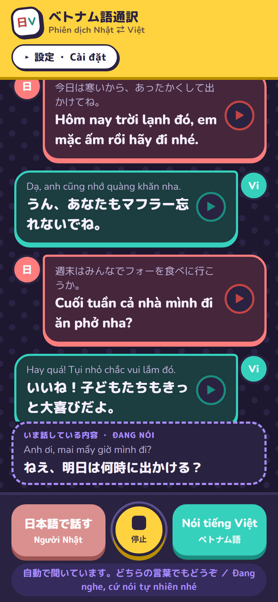
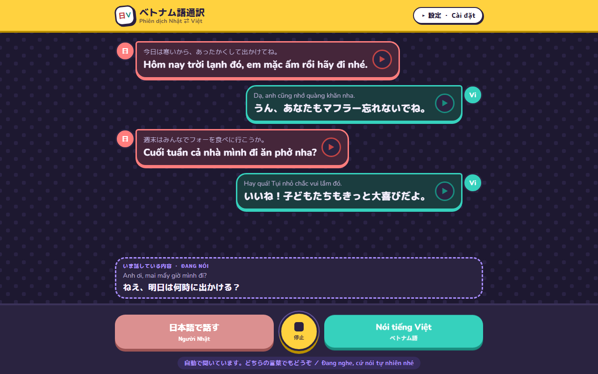
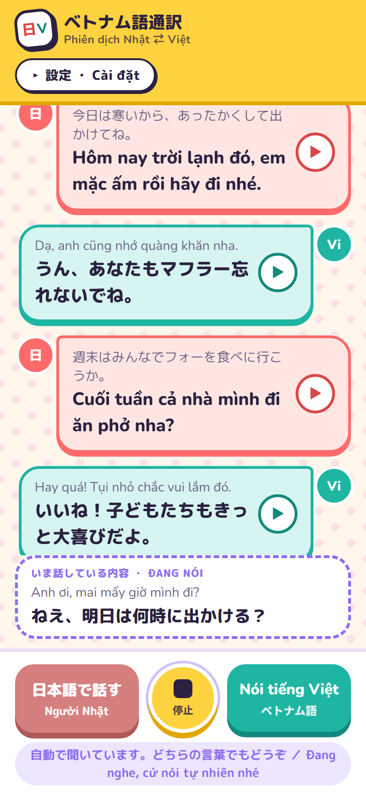

<title>ベトナム語通訳</title>
<meta name="claude:viewport-fit-sides" content="cover">
<link rel="stylesheet" href="https://fonts.googleapis.com/css2?family=M+PLUS+Rounded+1c:wght@400;700;800&family=Nunito:wght@400;700;800&display=swap">
<style>
/* Layout: case study in one column — sunny hero with phone + desktop shots, then feature cards, a pipeline strip, decisions, and stack, all in the app's own candy palette */
:root {
  --bg: #fff7ec; --dot: #ffe1ea; --surface: #ffffff; --ink: #2b2140; --muted: #6e6385; --line: #eadff5;
  --ja: #ff6b6b; --ja-soft: #ffe6e3; --vi: #1fb5a3; --vi-soft: #d6f5f0;
  --sun: #ffd23f; --sun-deep: #e0a800; --grape: #8c6cf2; --grape-soft: #ece6ff;
  --f-ja: "M PLUS Rounded 1c", "Hiragino Maru Gothic ProN", "Yu Gothic", sans-serif;
  --f-vi: "Nunito", "Segoe UI", sans-serif;
}
@media (prefers-color-scheme: dark) { :root:not([data-theme="light"]) {
  --bg: #1d1830; --dot: #2a2344; --surface: #2a2340; --ink: #f6f0ff; --muted: #b9add3; --line: #3b3259;
  --ja: #ff7d7d; --ja-soft: #45263a; --vi: #36d1bd; --vi-soft: #1b3d3f;
  --sun: #ffd23f; --sun-deep: #b98f00; --grape: #a88dff; --grape-soft: #362c5c; color-scheme: dark } }
:root[data-theme="dark"] {
  --bg: #1d1830; --dot: #2a2344; --surface: #2a2340; --ink: #f6f0ff; --muted: #b9add3; --line: #3b3259;
  --ja: #ff7d7d; --ja-soft: #45263a; --vi: #36d1bd; --vi-soft: #1b3d3f;
  --sun: #ffd23f; --sun-deep: #b98f00; --grape: #a88dff; --grape-soft: #362c5c; color-scheme: dark }
* { box-sizing: border-box }
body {
  margin: 0; color: var(--ink); font-family: var(--f-ja); line-height: 1.75;
  background-color: var(--bg);
  background-image: radial-gradient(var(--dot) 18%, transparent 19%), radial-gradient(var(--dot) 18%, transparent 19%);
  background-size: 34px 34px; background-position: 0 0, 17px 17px;
}
.wrap { max-width: 1040px; margin: 0 auto; padding-left: max(16px, env(safe-area-inset-left, 0px)); padding-right: max(16px, env(safe-area-inset-right, 0px)); }
.vi-t { font-family: var(--f-vi); }
h1, h2, h3 { line-height: 1.3; text-wrap: balance; margin: 0; }
h2 { font-size: 26px; font-weight: 800; }
h3 { font-size: 18px; font-weight: 800; }
p { margin: 0; }
.eyebrow { font-size: 12px; font-weight: 800; letter-spacing: .1em; color: var(--grape); }

/* hero */
.hero { background: var(--sun); border-bottom: 4px solid var(--sun-deep); color: #2b2140; }
.hero .wrap { padding-block: 40px 0; display: grid; grid-template-columns: minmax(0, 1fr) minmax(0, 1.25fr); gap: 32px; align-items: end; }
.hero-text { display: flex; flex-direction: column; gap: 16px; padding-bottom: 40px; min-width: 0; }
.logo { width: 56px; height: 56px; border-radius: 18px; background: #fff; border: 3px solid #2b2140; display: flex; align-items: center; justify-content: center; font-weight: 800; font-size: 20px; transform: rotate(-6deg); box-shadow: 4px 4px 0 #2b2140; }
.logo b { color: #d94848; } .logo i { font-style: normal; color: #13897b; font-family: var(--f-vi); }
.hero h1 { font-size: clamp(32px, 5vw, 48px); font-weight: 800; }
.hero h1 small { display: block; font-family: var(--f-vi); font-size: .42em; font-weight: 700; opacity: .75; margin-top: 4px; }
.hero .lead { font-size: 18px; font-weight: 700; max-width: 30em; }
.chips { display: flex; flex-wrap: wrap; gap: 8px; }
.chip { font-size: 13px; font-weight: 800; padding: 4px 12px; border-radius: 999px; background: #fff; border: 2px solid #2b2140; color: #2b2140; }
.shots { position: relative; min-height: 360px; min-width: 0; }
.shots .desk { display: block; width: 100%; border-radius: 16px 16px 0 0; border: 3px solid #2b2140; border-bottom: none; box-shadow: 6px -6px 0 rgb(43 33 64 / .18); }
.shots .phone { position: absolute; left: -6%; bottom: 0; width: 34%; border-radius: 26px 26px 0 0; border: 3px solid #2b2140; border-bottom: none; background: #2b2140; padding: 6px 6px 0; box-shadow: 6px -6px 0 rgb(43 33 64 / .25); }
.shots .phone img { display: block; width: 100%; border-radius: 20px 20px 0 0; }

main { display: flex; flex-direction: column; gap: 56px; padding-block: 56px 72px; }
section { display: flex; flex-direction: column; gap: 20px; }
.section-head { display: flex; flex-direction: column; gap: 6px; max-width: 42em; }
.section-head p { color: var(--muted); }

/* overview */
.overview { display: grid; grid-template-columns: repeat(3, minmax(0, 1fr)); gap: 16px; }
.ov { background: var(--surface); border: 3px solid var(--line); border-radius: 20px; padding: 18px 20px; display: flex; flex-direction: column; gap: 6px; }
.ov dt { font-size: 12px; font-weight: 800; letter-spacing: .08em; color: var(--grape); }
.ov dd { margin: 0; font-weight: 700; }

/* features */
.features { display: grid; grid-template-columns: repeat(2, minmax(0, 1fr)); gap: 16px; }
.feature { background: var(--surface); border-radius: 22px; padding: 20px 22px; display: flex; flex-direction: column; gap: 8px; border: 3px solid var(--line); }
.feature.star { border-color: var(--grape); box-shadow: 0 5px 0 var(--grape); grid-column: 1 / -1; }
.feature .tag { align-self: flex-start; font-size: 11px; font-weight: 800; letter-spacing: .08em; padding: 2px 10px; border-radius: 999px; background: var(--grape-soft); color: var(--grape); }
.feature p { color: var(--muted); }
.example { display: grid; gap: 8px; margin-top: 6px; }
.bubble { border-radius: 16px; padding: 8px 12px; border: 2px solid; display: flex; flex-direction: column; }
.bubble.ja { background: var(--ja-soft); border-color: var(--ja); }
.bubble.vi { background: var(--vi-soft); border-color: var(--vi); }
.bubble small { color: var(--muted); font-size: 13px; }
.bubble span { font-weight: 800; }
.vs { display: grid; grid-template-columns: minmax(0, 1fr) minmax(0, 1fr); gap: 8px; }
.vs .label { font-size: 12px; font-weight: 800; color: var(--muted); }

/* pipeline */
.pipe { display: flex; flex-wrap: wrap; align-items: stretch; gap: 10px; }
.step { flex: 1 1 150px; min-width: 0; background: var(--surface); border: 3px solid var(--line); border-radius: 18px; padding: 14px 16px; display: flex; flex-direction: column; gap: 4px; position: relative; }
.step b { font-size: 15px; }
.step span { font-size: 13px; color: var(--muted); line-height: 1.6; }
.step .who { font-size: 11px; font-weight: 800; letter-spacing: .06em; color: var(--grape); }
.arrow { align-self: center; font-weight: 800; color: var(--grape); font-size: 20px; }

/* decisions */
.decisions { display: grid; grid-template-columns: repeat(2, minmax(0, 1fr)); gap: 14px 28px; margin: 0; padding: 0; list-style: none; }
.decisions li { display: flex; flex-direction: column; gap: 4px; padding-left: 18px; border-left: 4px solid var(--sun); }
.decisions li p { color: var(--muted); font-size: 15px; }

/* gallery */
.gallery { display: grid; grid-template-columns: minmax(0, 2.2fr) minmax(0, 1fr); gap: 16px; align-items: start; }
.gallery figure { margin: 0; display: flex; flex-direction: column; gap: 8px; }
.gallery img { width: 100%; border-radius: 16px; border: 3px solid var(--line); display: block; }
.gallery figcaption { font-size: 13px; color: var(--muted); font-weight: 700; }

/* stack */
.table-wrap { overflow-x: auto; background: var(--surface); border: 3px solid var(--line); border-radius: 20px; }
table { border-collapse: collapse; width: 100%; min-width: 520px; }
th, td { text-align: left; padding: 12px 18px; border-bottom: 2px solid var(--line); vertical-align: top; font-size: 15px; }
th { font-size: 12px; letter-spacing: .08em; color: var(--grape); }
tr:last-child td { border-bottom: none; }
td:first-child { font-weight: 800; white-space: nowrap; }

footer { border-top: 4px solid var(--line); background: var(--surface); }
footer .wrap { padding-block: 24px; display: flex; flex-wrap: wrap; gap: 8px 24px; justify-content: space-between; color: var(--muted); font-size: 14px; }

@media (max-width: 760px) {
  .hero .wrap { grid-template-columns: 1fr; padding-top: 28px; gap: 8px; }
  .hero-text { padding-bottom: 8px; }
  .shots { min-height: 0; }
  .shots .phone { left: auto; right: 4%; width: 36%; }
  .overview, .features, .decisions, .gallery { grid-template-columns: 1fr; }
  .feature.star { grid-column: auto; }
  .vs { grid-template-columns: 1fr; }
  .arrow { transform: rotate(90deg); width: 100%; text-align: center; line-height: 1; }
  main { gap: 44px; padding-block: 40px 56px; }
}
</style>

<header class="hero"><div class="wrap">
  <div class="hero-text">
    <div class="logo" aria-hidden="true"><b>日</b><i>V</i></div>
    <h1>ベトナム語通訳<small>Phiên dịch Nhật ⇄ Việt</small></h1>
    <p class="lead">日本語とベトナム語で話す家族のための、話すだけでその場で訳して読み上げる会話アプリ。</p>
    <div class="chips"><span class="chip">言語の自動判定</span><span class="chip">やさしい AI 翻訳</span><span class="chip">AI 音声</span><span class="chip">スマホ対応</span></div>
  </div>
  <div class="shots">
    
    <div class="phone"></div>
  </div>
</div></header>

<main class="wrap">
  <section>
    <div class="section-head">
      <span class="eyebrow">概要</span>
      <h2>ボタンを押さなくても、話した言葉が相手の言語になる</h2>
      <p>1台のスマホやパソコンを家族で囲んで使います。日本語で話してもベトナム語で話しても、アプリがどちらの言語かを聞き分け、訳を画面に出して声で読み上げます。翻訳は直訳ではなく、家族どうしの温かい話し言葉に整えます。</p>
    </div>
    <dl class="overview">
      <div class="ov"><dt>使う人</dt><dd>日本語とベトナム語で暮らす家族</dd></div>
      <div class="ov"><dt>形</dt><dd>ブラウザで動く1ページのウェブアプリ（インストール不要）</dd></div>
      <div class="ov"><dt>制作時期</dt><dd>2026年10月</dd></div>
    </dl>
  </section>

  <section>
    <div class="section-head">
      <span class="eyebrow">主な機能</span>
      <h2>会話のテンポを止めないための5つの機能</h2>
    </div>
    <div class="features">
      <article class="feature star">
        <span class="tag">いちばんの特徴</span>
        <h3>話した言語を自動で判定</h3>
        <p>真ん中の「自動」を押すだけで、日本語とベトナム語のどちらで話しても聞き取ります。判定した言語のボタンが光るので、アプリが誰の話を聞いているかが一目でわかります。同じ人が続けて話しても、相手が割り込んでも、そのまま訳します。言語ボタンも残してあり、キーがなくても交互に話す形で使えます。</p>
      </article>
      <article class="feature">
        <h3>家族向けのやさしい AI 翻訳</h3>
        <p>「家族メモ」に「日本語はパパ、ベトナム語はママ」と書くと、ベトナム語の呼び方（anh、em、con、mẹ）や語尾（nhé、nha）まで家族の会話らしく訳します。</p>
        <div class="vs">
          <div class="example"><span class="label">直訳の例</span><div class="bubble vi"><small>今日は寒いから、あったかくして出かけてね。</small><span class="vi-t">Hôm nay lạnh nên hãy mặc ấm và đi ra ngoài.</span></div></div>
          <div class="example"><span class="label">このアプリ</span><div class="bubble vi"><small>今日は寒いから、あったかくして出かけてね。</small><span class="vi-t">Hôm nay trời lạnh đó, em mặc ấm rồi hãy đi nhé.</span></div></div>
        </div>
      </article>
      <article class="feature">
        <h3>話している途中から訳が見える</h3>
        <p>言い終わる前に、画面下の吹き出しに訳が出ます。聞いている側は、相手が何を言おうとしているかを先に知ることができます。</p>
        <div class="example"><div class="bubble vi"><small class="vi-t">Anh ơi, mai mấy giờ mình đi?</small><span>ねえ、明日は何時に出かける？</span></div></div>
      </article>
      <article class="feature">
        <h3>AI 音声で読み上げ</h3>
        <p>訳した文を、Microsoft の AI 音声（ベトナム語は HoaiMy、日本語は Nanami）で読み上げます。端末に声が入っていないときは、オンライン音声に切り替えます。</p>
      </article>
      <article class="feature">
        <h3>スマホでもパソコンでも</h3>
        <p>片手で押せる大きなボタン、折りたためる設定、ライトとダークの2つのテーマ。子どもからおばあちゃんまで迷わないよう、色と形で状態を伝えます。</p>
      </article>
    </div>
  </section>

  <section>
    <div class="section-head">
      <span class="eyebrow">仕組み</span>
      <h2>声が届いてから読み上げるまで</h2>
      <p>それぞれの段階に、速さと自然さで役割を分けたサービスを組み合わせています。</p>
    </div>
    <div class="pipe">
      <div class="step"><span class="who">マイク</span><b>話す</b><span>日本語でもベトナム語でも</span></div>
      <div class="arrow" aria-hidden="true">→</div>
      <div class="step"><span class="who">Azure 音声</span><b>聞き分けて文字に</b><span>連続モードで言語を判定しながら文字起こし</span></div>
      <div class="arrow" aria-hidden="true">→</div>
      <div class="step"><span class="who">Google 翻訳</span><b>途中の訳</b><span>話している最中の速い下訳</span></div>
      <div class="arrow" aria-hidden="true">→</div>
      <div class="step"><span class="who">Claude</span><b>やさしい訳に整える</b><span>直前の会話と家族メモを踏まえて仕上げ</span></div>
      <div class="arrow" aria-hidden="true">→</div>
      <div class="step"><span class="who">AI 音声</span><b>読み上げ</b><span>相手の言語の自然な声で</span></div>
    </div>
  </section>

  <section>
    <div class="section-head">
      <span class="eyebrow">工夫したところ</span>
      <h2>家族の会話で起きる、小さなつまずきをなくす</h2>
    </div>
    <ul class="decisions">
      <li><h3>自分の声を訳し直さない</h3><p>スピーカーの読み上げをマイクが拾うと、訳がまた訳されてしまいます。読み上げ中と直後の0.6秒は聞き取り結果を捨てるようにしました。</p></li>
      <li><h3>短い間で文を切らない</h3><p>言葉を探して少し黙っただけで発言が途切れないよう、言い終わってから0.7秒待って1回分の発言にまとめます。</p></li>
      <li><h3>どこかが止まっても会話は続く</h3><p>AI 翻訳が失敗したら Google 翻訳、それも失敗したら別の翻訳サービスへ。読み上げも AI 音声から端末の声、オンライン音声へと順に切り替えます。</p></li>
      <li><h3>キーは家族の端末の中だけ</h3><p>Claude と Azure のキーは、その端末のブラウザにだけ保存します。サーバーを持たないので、公開ページに秘密の情報を置かずに済みます。</p></li>
      <li><h3>スマホの音の制限に対応</h3><p>スマホのブラウザは、タップから始まった音しか鳴らせません。最初のタップで音声を有効にして、あとの読み上げが自動で流れるようにしました。</p></li>
      <li><h3>途中の訳を使い回して速く</h3><p>話している最中に作った訳を覚えておき、言い終わった直後の表示に使います。最後の読み上げまでの待ち時間を短くしています。</p></li>
    </ul>
  </section>

  <section>
    <div class="section-head">
      <span class="eyebrow">画面</span>
      <h2>ライトとダーク、パソコンとスマホ</h2>
    </div>
    <div class="gallery">
      <figure><figcaption>パソコン・ダークテーマ。判定した言語のボタンが光ります。</figcaption></figure>
      <figure><figcaption>スマホ・ライトテーマ</figcaption></figure>
    </div>
  </section>

  <section>
    <div class="section-head">
      <span class="eyebrow">技術</span>
      <h2>使った技術</h2>
    </div>
    <div class="table-wrap"><table>
      <thead><tr><th>役割</th><th>技術</th><th>選んだ理由</th></tr></thead>
      <tbody>
        <tr><td>画面</td><td>HTML / CSS / JavaScript（1ファイル、フレームワークなし）</td><td>どの端末でもすぐ開けて、公開も GitHub Pages だけで済む</td></tr>
        <tr><td>言語判定と文字起こし</td><td>Azure AI Speech（Speech SDK、連続言語判定）</td><td>話している途中でも言語を切り替えて判定できる</td></tr>
        <tr><td>予備の聞き取り</td><td>Web Speech API</td><td>キーなしで使える交互モード用</td></tr>
        <tr><td>翻訳（仕上げ）</td><td>Claude（Anthropic API）</td><td>会話の流れと家族関係を踏まえた、自然でやさしい言い方</td></tr>
        <tr><td>翻訳（途中）</td><td>Google 翻訳</td><td>速さを優先する途中表示に</td></tr>
        <tr><td>読み上げ</td><td>Web Speech API の音声合成（Microsoft AI 音声）</td><td>Edge では無料で自然な AI 音声が使える</td></tr>
        <tr><td>開発用サーバー</td><td>Node.js（依存パッケージなし）</td><td>手元での確認と音声の中継だけを担当</td></tr>
      </tbody>
    </table></div>
  </section>
</main>

<footer><div class="wrap">
  <span>ベトナム語通訳 ・ Phiên dịch Nhật ⇄ Việt</span>
  <span>画面の会話はデモ用のサンプルです</span>
</div></footer>
